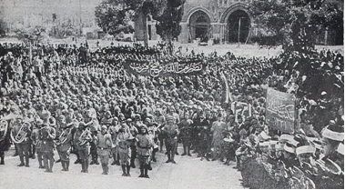

Kudüs’teki kolordu karargâhı, Fransızların Notre Dame adındaki Hristiyan hacıların misafir edilmesine ayrılmış olan büyük binada kuruldu. Biz orada alaturka pişirilen yemekler yiyor ve alkolsüz olarak yaşıyorduk.
Cemal Paşa, Kanal’a karşı yapacağımız harekâtta bize refakat etmek için Mekke’den Sancak-ı Şerif’i getirtmişti. Paşa’nın bundan maksadı her halde Arap askerlerinin dinî duygularını körükleyerek vatan sevgisindeki noksanlarını telâfi etmekti. Yaklaşık 65 yaşlarında hürmet edilen bir Şeyh, Sancak-ı Şerif’in muhafazasına memurdu. Birçok nesilden beri bu memuriyet kendi ailesi arasında babadan oğula intikal ederek devam edip gidiyordu. Şeyhe, yetişkin üç oğlu refakat ediyordu. Sancak-ı Şerif’i Kudüs’e getirtmek için bunlar uzun bir seyahat yapmışlardı. 20 Aralık’ta bunların Kudüs’e girişi bize çok güzel ve heyecan veren bir olay yaşatmıştı.
Askerî ve mülkî makamların ileri gelenleri, birçok Müslüman âlimleri, şehrin muteber kimseleri, mektepler ve birliklerin oluşturduğu büyük kalabalık –kısmen yaya, kısmen hayvan sırtında veya arabalarda- Kudüs’ün kuzeyinde Nablus yolu üzerinde, mukaddes şehre fevkalâde manzarası olan bir tepede toplanmışlardı. Sancak-ı Şerif ile şeyhleri taşıyan araba, son dakikada kurulmuş olan karşılama çadırının önünde görünür görünmez etrafa, tasvirine imkân olmayan bir karışıklık, şairane bir düzensizlik, kulakları çınlatan bir gürültü hâkim olmuştu. Dinine sadık her Müslüman, Sancak-ı Şerif’i öpmek istediğinden, kolordu komutanı her iki eliyle onu muhafızlarının elinden alıp arabasına bininceye kadar gayet tehlikeli bir sıkışıklık meydana gelmişti. Bütün bu kargaşadan bir süre sonra, yavaş yavaş çok muntazam ve şairane bir alay oluşmuştu. Alay dağın ilk yamacından yavaş yavaş inmiş palmiyelerle donatılmış olan dar caddelerinden, yeşillikler ve eski halılarla süslenmiş evlerin arasından kıvrımlı bir şerit halinde Kudüs’ün Şam Kapısı’na doğru ilerlemişti. Hemen her Arap evinin önünde, ev sahibi bize eski gümüş bir kaptan gülsuyu serpiyordu. Pencereler, damlar, duvarlar çok sık bir halde rengârenk elbiseli erkekler, kadınlar ve çocuklarla dolmuştu. Doğulu kadınların sevinçlerini ifade eden, uzun ve yüksek titretilerek çıkarılan sesler aralıksız bir hâlde etrafı çınlatıyordu. Bütün halkı tarifi mümkün olmayan bir sevinç ve heyecan kaplamıştı.

Kudüs’e gelen bir askeri birliğe Mescid-i Aksa’da yapılan zafer duası.
Alay, Şam Kapısı’na yaklaştığı zaman bu ruhî halet en yüksek noktasına erişmişti. Bu sırada şehrin güney tarafını koyu siyah ve kesif bulutlar kaplamış olduğundan, güneşin keskin ışıkları altında, palmiye ve rengârenk kumaşlarla sallanarak bağırıp çağıran insanların kaplamış oldukları mazgal ve kuleleriyle şehir surlarının göz kamaştırıcı beyazlığı bâriz bir şekilde belirmişti. Düşünceler iki bin sene geri gidiyor ve İsa’nın bu mukaddes şehre girişinin aynı manzarayı gösterdiğini düşündürüyordu. Şehrin içinde alay, dar ve inişli yokuşlu yollardan ancak çok yavaş ilerleyebilmişti. Alayın başı Mescid-i Aksa’ya vardığı zaman iri yağmur taneleri düşmeye başlamıştı.
Sancak-ı Şerif, muhafaza edilmek üzere Ömer Camii’ne konulduktan sonra Kudüs Müftülüğü’nün merasim dairesine gidilmiş ve orada kahve, sigara ve tatlılar ikram edilerek kafiyeli veyahut kafiyesiz nutuklarla Sancak-ı Şerif’in Kudüs’e gelişi kutlanmıştı.
Sancağın muhafazasına memur şeyh ile üç oğlu Benî Davut’ta yerleştirilmişti. Burası mukaddes şehrin güney ucunda pek çok binayı kapsayan bir yerdir ki, Hristiyan ve Müslüman rivayetlerine göre Davut’un kabri ile İsa’nın akşam sofrasının bulunduğu odayı içermektedir. Bu odada öğle yemeği yenilmişti. Yemekte Mekke’den gelen misafirlerden başka yalnız kolordu komutanı, müftü, mutasarrıf ve ben bulunuyordum. İsa’nın akşam sofrasının kurulduğu yer, sivri kubbeli ve iki sütun ile duvar istinat direkleri olarak kireçle badanalı olan dairedir ki, herhalde eski bir kilisenin bir kısmı olabilir. Sofraya içi pirinçle doldurulmuş ve kızartılmış tam bir koyun getirildi. Çatal bıçak yoktu. Yanımda oturan Arap komşum büyük hançeriyle bana muazzam bir parça kesip bunu titiz bir temizlikle bir ekmek diliminin üstünde bana uzatmamış olsaydı küçücük çakımla çok çaresiz bir durumda kalacaktım. Portakal ve kahvelerden sonra yemek bitti. Geleneklerde mukaddes olarak tanınmış olan bu mahalde verilmiş olan ziyafetteki iptidailiğin bende bıraktığı derin tesiri anlayabilmek için insanın muhakkak surette bu mukaddes şehrin toprağında bulunmuş olması lâzımdır.
Maalesef Sancak-ı Şerif’i getiren şeyh daha Kudüs’e girdiği günün akşamında rahatsızlanmıştı. O, uzun zamandan beri kalp rahatsızlığından şikâyetçi imiş. Bizim Alman doktorlarının hüneri de onu kurtarmaya muvaffak olamamıştı ve 24 Aralık akşamı vefat ederek büyük bir törenle defnedilmişti. Ömer Camii’nde namazı kılınarak duası yapıldıktan sonra büyük cenaze alayı ile şehrin dar sokaklarından defnedileceği yere götürülmüştü. Doğuda güzel bir âdet vardır. Bu da, öleni akraba ve dostları kabre kadar taşıyarak ona son hizmetlerini yerine getirirler. Kolordu komutanı dahi görkemli üniformasıyla ara sıra tabutu omuzuna alarak taşımıştı. Alay kabristana geldiği zaman mezarın kazılması henüz bitmemişti. Mezarcılar işlerini bitirinceye kadar epeyce zaman beklemeye mecbur kaldık. Doğuda bu gibi hadiseler için kimse asabileşemez. Kabrin açılması bittikten sonra oğullarının feryat ve figanı içinde onu, yüzü Mekke istikametine gelecek şekilde ebedî uykusuna terk etmiştik.
Kanal’a karşı ileri hareket edecek kanat kolu için 25 Aralık tespit edildi. Bu tarihten iki gün önce ordu komutanlığından bir emir gelmişti. Bu emir bizim şimdiye kadar yapmış olduğumuz bütün plan ve tertibatı altüst ediyordu. Şam’dan hareketimizden önce ordu ve kolordu komutanlıkları arasındaki mutabakata rağmen, Paşa’nın çevresi, onu ve kurmay başkanını her halde fikirlerinden vazgeçirmeye muvaffak olmuştu. Su tedarikinde, yiyecek hazırlığı ve naklindeki zorluklar bizi, birliklerimizin çöldeki bekleme müddetini mümkün olduğu kadar kısaltmaya mecbur ediyordu. Biz yapacağımız hareketi bir Hussar süvari alayının akını tarzında anî bir darbe indirmek suretiyle yapmak istiyorduk. Hâlbuki ordu komutanlığı çölün adım adım ve bir plan dairesinde geçilmesi gerektiğini emrediyordu. Sefere katılacak kuvvetler harekete geçmeden önce hudut ile Kanal arasındaki ara ambarları tesis ve bunlara bir aylık yiyecek doldurulacaktı. Çöldeki ambar mevkileri de tahkim edilecekti. Bundan başka Cemal Paşa bir başarısızlık durumunu göz önünde tutarak Kanal’dan iki günlük mesafe kadar uzakta bir istinat noktası olarak müstahkem mevzi inşa ettirmek istiyordu. Yerine getirilmesi mümkün olsaydı biz de şüphesiz daha emin olan bu usulü seçerdik; hâlbuki gayet özenli bir şekilde yapmış olduğum hesaplar, elde bulunan nakil araçlarının çölde bulunan seferi kuvvetlere bir-iki hafta bile erzak nakline yetmediğini ortaya koymuştu; nerde kaldı ki, bunlar bir aylık yiyecek ihtiyacı ve müstahkem mevzilerin inşasına gerekli olan malzemeyi nakledeceklerdi. Ne çare ki, ordu karargâhında bulunan subaylar bu gibi hesapları yapmamışlardı. Aksi takdirde Albay Frankenberg gecikmenin yalnız 14–16 gün süreceğini yazmazdı. Bizim gayet esaslı surette yaptığımız hesaplara göre ordu komutanlığı tarafından gerekli görülen yiyecek maddelerinin yalnız Bîrüssebi’ye kadar nakli için sekiz haftaya ihtiyaç vardı.
Kolordu komutanı ile ben, ordu komutanlığının bu işleri altüst etmesine son derece gücenmiş ve benim bu hususta Albay Frankenberg’e yazmış olduğum mektup ile de fikir ve kanaatlerimi açıkça bildirmeyi ihmal etmemiştim ve özellikle şu noktayı açığa çıkarmıştım ki, ordu komutanlığı almış olduğu bu tertibatı değiştirmek istemediği takdirde 1915 senesi ilkbaharında Kanal’a karşı bir harekâtın yapılması artık mümkün olamayacaktı.
26 Aralık akşamı Albay Frankenberg’in Kudüs’e gelmesiyle bu mektup ordu komutanlığında gerekli olan tesiri yapmıştı. Ordu komutanlığının niyetinin yerine getirilmesinin mümkün olmadığına Albay ikna edilmişti. Doğru olmadığı anlaşılan bir kararın geri alınması Almanya’dakine göre doğuda daha kolay olduğu için her şey tekrar eskisi gibi kaldı. Bu can sıkıcı hadiseden dolayı ileri yürüyüşe geçmemiz 14 günlük bir gecikmeye uğramış ise de, bu da nihayetinde bir felâket oluşturmazdı. Bu sırada hiç olmazsa kötü havalardan ve bazı ast makamların beceriksizliği yüzünden meydana gelmiş olan zararları kısmen telafiye imkân bulabilmiştik.
Hiçbir gün geçmiyordu ki, posta bir veya diğer birkaç kötü haber getirmiş olmasın. Bu gibi haberlerden birinde, bir deve taburunun 1250 hayvan mevcudundan 450’sinin öldüğü bildiriliyordu. Hâlbuki bu taburdan şimdiye kadar fazla yorucu bir vazife istenmemişti. Bu hâl olsa olsa hayvanlara iyi bakılmamasından ve deve kolları komutanlarının vazifelerindeki liyâkatsizlik ve tembelliklerinden ileri geliyordu. Bu hususta ne derecelerde günah işlendiğine Kudüs’te bulunan bir deve kolundaki vukuat örnek oluşturmaktaydı. Deve kolunun erleri, komutanlarının üç günden beri yüzünü göremediklerinden bu süre içinde ne kendilerine erzak ve ne de hayvanlara yem tedarik edememişlerdi. Kolordu komutanının vazifesinde tembellik gösteren deve kolu komutanını on beş sopa ve bir aylık maaşının kesilmesiyle cezalandırılması ne işe yaradı? Bir defa da, büyük zorluk ve masraflar karşılığında tedarik edilmiş olan su kaplarının üçte birinin akmakta ve kullanılmayacak bir halde olduğu haber veriliyordu. Tam bu sırada kolordu karargâhı Bîrüssebi’ye nakledilmek üzere idi. Kudüs menzilinin güven veren ve enerjik müfettişi dostum Albay Ruşen yanıma gelerek şunları söylemişti: “Albayım, Kanal’a karşı yapacağınız hareketi maalesef birkaç gün ertelemek mecburiyetindesiniz. Maalesef bir yanlış anlama neticesinde burada bulunan su kaplarını Bîrüssebi’ye göndermeyi unutmuşlar; Bîrüssebi’deki deve kollarının kaplarını almak üzere tekrar buraya gelmesi lâzım”. Bunu değil yapmak aklımdan bile geçiremezdim ve Albay Ruşen’e deve kollarının çok zahmetli olan çöl yürüyüşlerine başlamadan önce birkaç gün mutlaka istirahat etmek mecburiyetinde olduklarını söyledim. Bunun üzerine, işlere önceden hazırlık yapmaksızın derhal çare bulmak hususunda çok maharetli bir doğuluya has olan zekâ ile Albay Ruşen bu işe de bir çözüm yolu düşünmüştü. Şöyle ki; zaptiye vasıtasıyla 17 ile 60 yaş arasındaki bütün erkekler toplattırılmış ve kendilerine makbuz karşılığında Bîrüssebi komutanlığına belirli sayıda teneke teslim etmek mecburiyetinde oldukları ve bu emre muhalefet edenlerin en ağır cezaya çarptırılacakları tebliğ edilmişti ve hakikaten binlerce su kabı tam zamanında belirlenen yere teslim edilmiş bulunuyordu. Halk bunları kısmen arkalarında ve kısmen de birleşip aralarında bir deve veya bir eşek kiralayarak teslim etmişlerdi.
İsa’nın doğum yortusunu, Kudüs’ü ziyaret edenlerin bildiği Fast Oteli sahibinin ailesiyle birlikte, Noel ağacı, şarkıları ve hediyeleriyle gerçek bir Alman Noel bayramı olarak kutlamıştık. Alman hemşehrilerimiz de Kudüs’teki ikametimizi mümkün olduğu kadar hoş kılmak için ellerinden geleni yapıyor ve bizi fevkalâde memnun ediyorlardı. Gece saat ikide bir araba ile yıldızlı bir semanın altında ve ılık bir hava içinde İsa’nın doğduğu kilisedeki ayine katılmak üzere Beytüllâhim’e gittik. Şark semasının güzellik ve ihtişamını bizim ülkemizde tasavvur etmek mümkün değildir. Kilisedeki âyini, Kudüs Lâtin patriği İtalyan ruhban prenslerinden kibar ve nazik Monsenyör Camassei yönetiyordu. Bu zat daha ilk ziyaretimde, belirgin asaleti, yüksek hayırseverliğiyle beni derinden etkilemişti. Aynı âyinde, eskiden Arz-ı Mukaddes’teki Katolik kilisesini himayesinin altına almış olan Fransa Cumhuriyeti’nin resmî temsilcisi sıfatıyla Filistin başkonsolosu ve maiyetinin gösterişli üniformalarıyla doldurdukları yerlerin şimdi, Alman subayları tarafından doldurulması, halk arasında etkili birtakım tahriklere yol açmaktan geri kalmamıştı.
Âyinden sonra kilisenin bakım ve muhafazası kendilerine emanet edilmiş olan rahipler yemek salonlarında bizi yemeğe davet etmişlerdi. Sabahın saat üçünde Noel gecesinin sona erişiyle evlerimize dönmüştük.
İsa’nın doğum günü, bana Alman yarbaylığına ve Türk albaylığına terfi haberini getirmişti.[7]
12 Ocak 1915’te, kolordu komutanlığı Bîrüssebi’ye nakledildi. Biz bu münasebetle henüz inşa edilmekte olan Halilürrahman–Bîrüssebi şosesinden geçmiştik. Bu şosenin inşasıyla görevli olan Türk subayı, büyük yükselti farkları, derin uçurumları ve kayalık dik yamaçlarıyla çok sarp olan bu arazide yolun geçeceği istikameti büyük bir maharet ve ustalıkla tespit etmişti. Yolun geniş çevresinde bulunan meskûn mahallerin bütün halkı yolun inşasında istihdam edilmekteydi. Erkekler zor işleri yapıyor ve kadınlarla çocuklar da inşaat yerinin yakınında bol miktarda bulunan taşları topluyor ve küçük küfeler içinde inşaat yerine taşıyorlardı. İşte bu sayede ve nispeten kısa denilecek bir zamanda bu yolun inşası güçlükle de olsa topçumuzu geçirebilecek derecede ilerlemiş bulunuyordu. Ne de olsa bu yolda 30 kilometre kadar uzun bir kısmın inşası söz konusuydu. Bu inşaatta kullanılmakta olan kazma, kürek vesair aletler olabildiğince ilkel bir durumdaydı.
Bîrüssebi’deki işlere gelince, bunları oradaki menzil müfettişi Albay Behçet ve Dr. Schumaher’in ortaklaşa gayretli ve maharetli çalışmaları sayesinde mükemmel bir düzen içerisinde bulmuştuk.
Kudüs’ten ayrılırken orada oturduğum odaya bakan yaşlı bir Hristiyan Arap kadının eline bir bahşiş sıkıştırmak istemiştim, bunun üzerine kadın bana; “Hayır efendim, gördüğüm hizmetler için sizden para almaktan utanırım. Vatanıma faydalı bir iş yapabilmek için bu hizmet bana fırsat vermiştir” demişti.